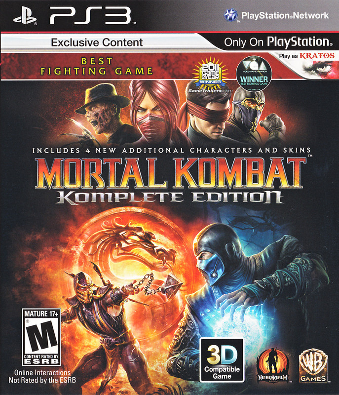

 Mortal Kombat (comúnmente abreviado MK) es una franquicia de videojuegos de lucha creada por Ed Boon y John Tobias en 1992. Las cuatro primeras entregas fueron distribuidas por Midway Games y lanzadas principalmente en máquinas arcade; posteriormente estuvieron disponibles en consolas domésticas. Los títulos de arcade fueron comprados más tarde por Acclaim Entertainment para las consolas caseras de esa época. La franquicia fue adquirida por Warner Bros en julio de 2009 y se convirtió en una parte de la Warner Bros. Interactive Entertainment. El título más reciente es Mortal Kombat: Onslaught, publicado en octubre de 2023. Como resultado de su éxito, Mortal Kombat ha dado lugar a varias secuelas y se ha escindido en varios juegos de acción y aventura, ha tenido películas, series de televisión e historietas. La serie es conocida por su violencia gráfica, incluyendo particularmente los fatalities, un movimiento especial que para ser realizado requiere hacer una combinación específica de botones, que posteriormente llevó a las empresas de videojuegos a crear la ESRB.23 El nombre de la serie también es conocido por el uso de la letra «K» en lugar de la «C» en el título, la razón fue explicada por Ed Boon durante una entrevista: «Sólo quería que el título fuera raro». Los primeros juegos de la serie se destacaron por sus gráficos extremadamente realistas para su época y su uso extensivo de intercambio de paleta para crear nuevos personajes. La serie fue creada con el fin de competir con la franquicia de Street Fighter.